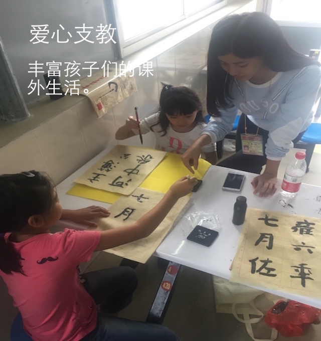
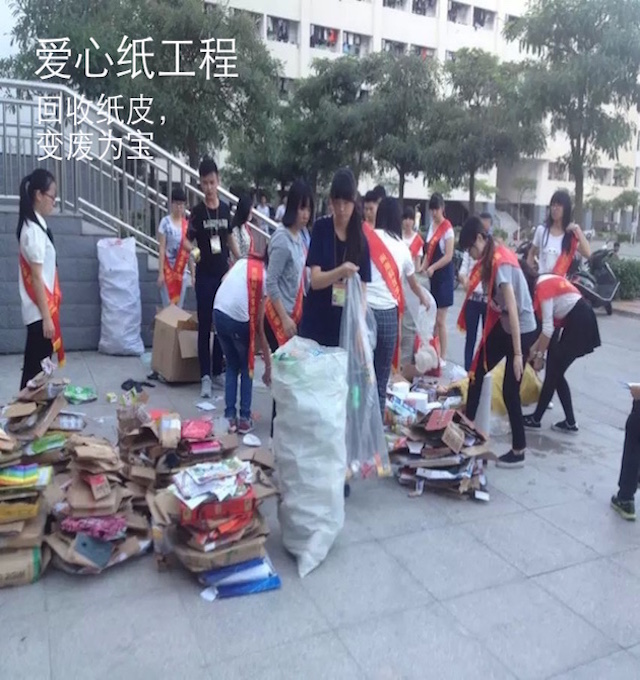
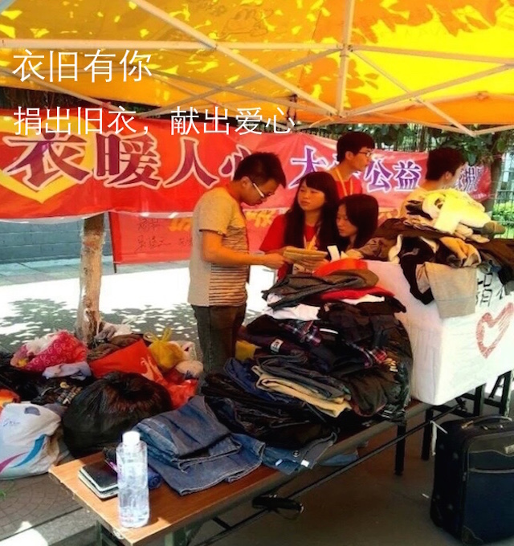
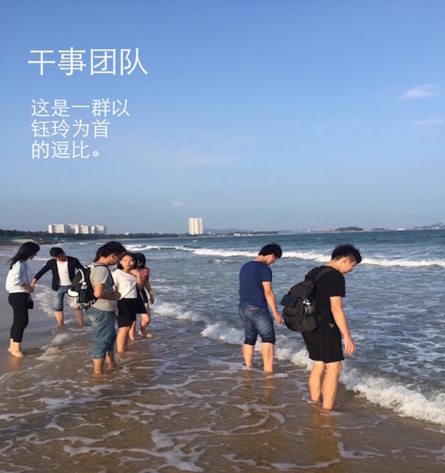

! 欢迎来到计算机系青年志愿者协会
首页
爱心纸工程
衣旧有你
爱心支教
关于我们

爱心支教
每周固定的时间，我们青年志愿者协会的干事会组织拥有如“象棋，毛笔，跳绳”等各种才艺的志愿者，前往康美小学给小朋友们进行教学，增长小朋友们的课外知识，丰富小朋友们的课外生活。
更多信息－－>
支教时间
计算机科学系青协安排的时间是每周三下午，在菲华楼集合后前往康美小学
我要报名志愿者
点击报名爱心支教
爱心纸工程
爱心纸工程，专门回收同学们平时收快递，喝饮料后留下来的废弃纸皮，水平。每一周的固定时间，我们青年志愿者协会会组织志愿者对固定的宿舍楼进行回收，如果同学宿舍有较多的纸皮，水瓶，也可以在我们的官方网站留言，我们会上门进行回收。
更多信息－－>
回收时间
青年志愿者协会安排的时间是每月两次，每次固定在周五下午，回收固定的楼层
我有纸皮！
点击填写回收单


衣旧有你
衣旧有你，主要是将同学们穿旧的，不需要的衣服进行统一回收，每一周会有固定的一天，我们的青年志愿者协会的干事会组织志愿者进行上门回收，最后进行物资整理，最后我们将会把衣服捐给偏远地区学校的孩子。
更多信息－－>
回收时间
时间不固定，活动开始前会提前通知＝－＝
我有旧衣服！
点击填写回收单
计算机系青协干事团队
来自计算机科学系各个专业的小伙伴，因为共同的公益情怀聚集在了一起，在钰玲的代领下，计算机系青协的干事
活泼乐观，积极向上
，在公益的道路上不断推进。
干事职责
1:负责公益活动策划
2:志愿者人员组织
3:志愿者志愿时间计算和等级
去哪里找我们呢？
菲华楼B栋6楼

友情链接 Link
中国共青团
|
中国文明网
|
中国青年网
|
中国志愿服务联合会
|
中国青少年发展基金会
|
文明公民网
|
网站介绍
|
组织介绍
|
关于我们
福建师范大学闽南科技学院
计算机系青年志愿者协会
Copyright zgzyz.org.cn All Right Reserved. 京ICP备 13045755号-1